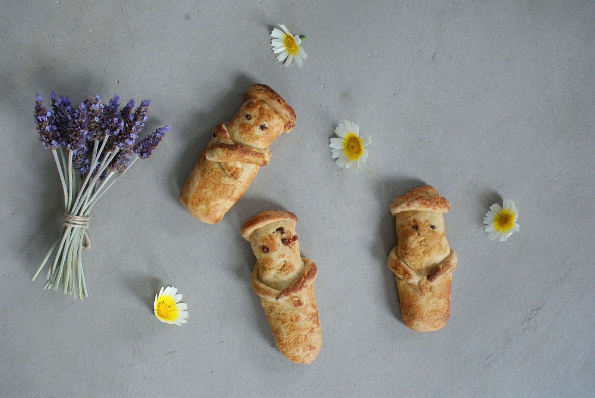
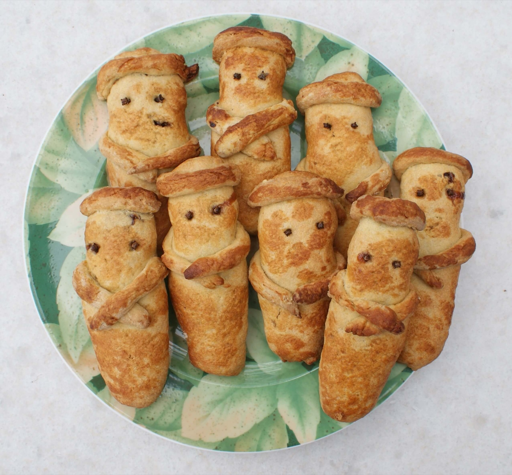
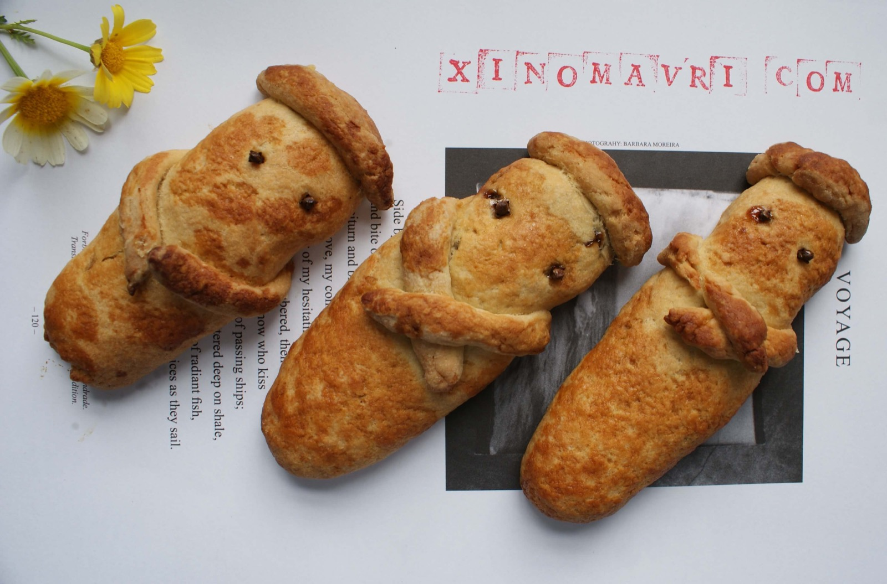
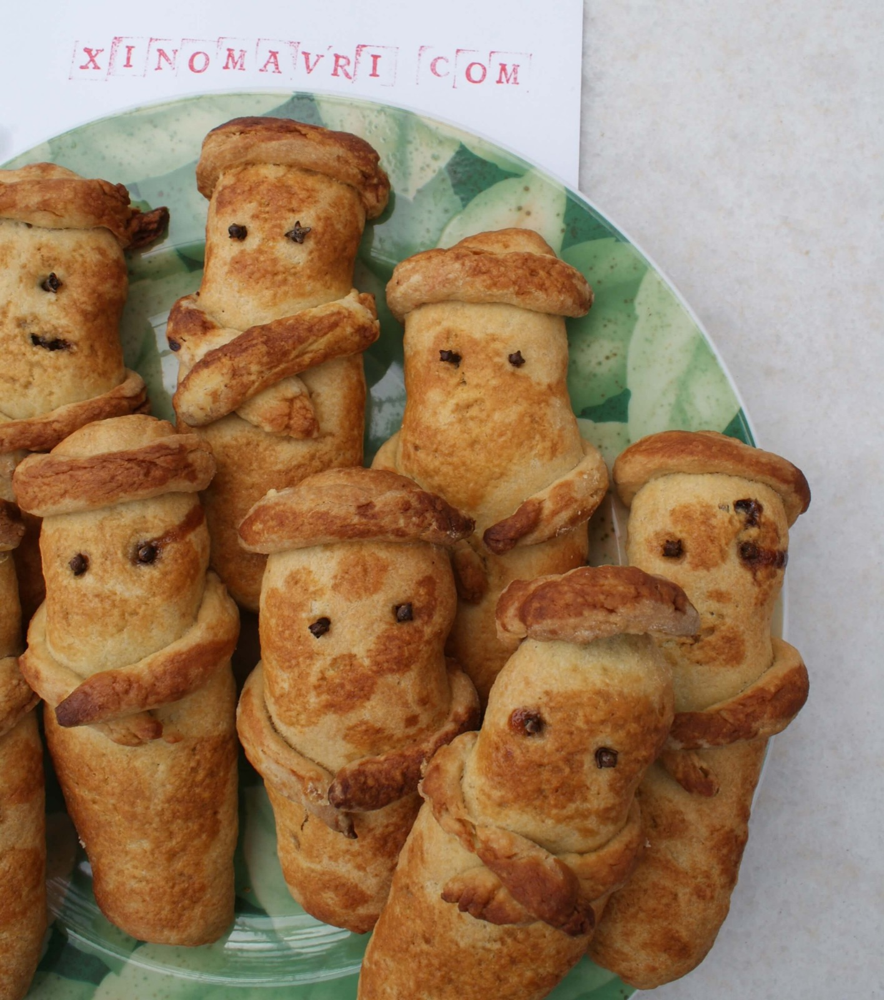

Λαζαράκια Λέρου

Την περσινή άνοιξη, εκεί στην αρχή της καραντίνας, είχα δώσει μία συνταγή για λαζαράκια τύπου σταφιδόψωμο, η οποία όμως δεν με ικανοποίησε πλήρως. Φέτος η αγαπητή αδελφή μου αποφάσισε να κάνει μία εκτεταμένη έρευνα για το θέμα, και κατέληξε σε μία ομάδα συνταγών από τα Δωδεκάνησα και ειδικά από τη Λέρο. Η λογική των συνταγών αυτών είναι μία μπισκοτένια ζύμη με ταχίνι και χυμό πορτοκαλιού και μία γέμιση, η οποία ουσιαστικά είναι μία καταπληκτική πάστα από καρύδια, σταφίδες και λίγη μαρμελάδα. Πειραματιστήκαμε, μετρήσαμε, ξαναμετρήσαμε και καταλήξαμε στην παρακάτω συνταγή. Οι λεπτομέρειες είναι εξαντλητικές αλλά έχουν νόημα, κυρίως γιατί διευκολύνουν πολύ την διαδικασία. Είναι μπελαλίδικη συνταγή αλλά αξίζει τον κόπο κάθε λεπτό της.

Για 24 λαζαράκια
Υλικά
Για τη ζύμη
- 1 κιλό αλεύρι για όλες τις χρήσεις
- 1 μπέικιν πάουντερ
- ½ κ.γ. αλάτι
- 240 γρ. ελαιόλαδο ελαφρύ
- 240 γρ. ταχίνι
- 240 γρ. χυμό πορτοκάλι
- 200 γρ. ζάχαρη
- 1 κ.γ. κανέλα
- 240 γρ. χλιαρό νερό για το ζύμωμα

Για τη γέμιση
- 500 γρ καρύδια
- 500 γρ. σταφίδες ξανθές και μαύρες
- 1,5 κ.γ. κανέλα για τη γέμιση
- ξύσμα από 2 μεγάλα ή 3 μέτρια πορτοκάλια
- 200 γρ. μαρμελάδα βερίκοκο
Για τη διακόσμηση
- 36 γαρύφαλλα (μοσχοκάρφια)
Για το άλειμμα
- 2 κ.σ. μέλι
Υλοποίηση
Για τη γέμιση
- Μουλιάζουμε τις σταφίδες για 2-4 ώρες (σε ζεστό νερό φουσκώνουν πιο γρήγορα).
- Αλέθουμε τα καρύδια στο μούλτι σε μικρά κομματάκια και τα τοποθετούμε σε μια γαβάθα.
- Σουρώνουμε τις σταφίδες, τις αλέθουμε στο μούλτι & τις προσθέτουμε στα καρύδια.
- Προσθέτουμε τη μαρμελάδα βερίκοκο, 1,5 κ.γ. κανέλα και το ξύσμα από 2 μεγάλα ή 3 μέτρια πορτοκάλια. Ανακατεύουμε καλά όλα τα υλικά.

Για τη ζύμη
- Κοσκινίζουμε το αλεύρι με το μπέικιν πάουντερ και το αλάτι.
- Σε μια μπασίνα βάζουμε το ταχίνι και 240 γρ. χλιαρό νερό. Διαλύουμε καλά το ταχίνι.
- Προσθέτουμε το χυμό πορτοκαλιού.
- Προσθέτουμε το λάδι και τη ζάχαρη και ανακατεύουμε πολύ καλά με το σύρμα.
- Προσθέτουμε τα 2/3 από το αλεύρι και ανακατεύουμε με το σύρμα. Αφήνουμε το σύρμα και προσθέτουμε το υπόλοιπο αλεύρι. Ζυμώνουμε λίγο μέχρι η ζύμη να είναι ομοιογενής. Η ζύμη είναι πολύ κολλώδης και δίνει την εντύπωση ότι δεν πλάθεται. Δεν προσθέτουμε επιπλέον αλεύρι.
- Στρώνουμε χαρτιά ψησίματος σε 3 ταψιά φούρνου (θα βάλουμε 8 λαζαράκια σε κάθε ταψί για να ψηθούν ομοιόμορφα).
- Ζυγίζουμε 24 κομμάτια ζύμης των 70 γρ. για το σώμα, 24 των 15 γρ. για τα χέρια και 24 των 8 γρ. για το σαρίκι. Μέχρι να τελειώσουμε το ζύγισμα, η ζύμη έχει τη σωστή υφή για να την πλάσουμε. Σε ένα μικρό μπολ βάζουμε λίγο νερό και το κρατάμε κοντά μας για να βρέχουμε τα δάχτυλα.
- Πλάθουμε κατ' αρχήν όλα τα κορδόνια των χεριών και τα κορδόνια για το σαρίκι, ώστε να είναι όλα έτοιμα.
- Στη συνέχεια ανοίγουμε το κομμάτι για το σώμα σε ένα οβάλ πιτάκι διαστάσεων 18Χ12 εκ. Παίρνουμε 50 γρ. από τη γέμιση και την απλώνουμε κατά μήκος της ζύμης. Βρέχουμε με τα δάχτυλα το περίγραμμα της ζύμης και κλείνουμε πρώτα κατά μήκος και μετά στις άκρες. Γυρίζουμε ανάποδα το λαζαράκι και το τυλίγουμε με το μεγάλο κορδόνι για τα χέρια. Μετά προσθέτουμε και το κορδόνι για το σαρίκι γύρω από το κεφάλι του. Με τα δάχτυλά μας πιέζουμε λίγο τα πλαϊνά του λαιμού ώστε να λεπτύνει σ' εκείνο το σημείο ο λαιμός.
- Καρφώνουμε 2 γαρύφαλλα για μάτια κι αν θέλουμε και ένα τρίτο εκεί που διασταυρώνονται τα χέρια.
- Αν θέλουμε κάνουμε και μερικά σαβανωμένα λαζαράκια, προσθέτοντας ένα κορδόνι ζύμης γύρω –γύρω, σαν περίγραμμα.
- Τα τοποθετούμε στο ταψί και τα ψήνουμε στους 160οC με αέρα για 35 λεπτά ή μέχρι να ροδίσουν.
- Σε ένα μπρίκι ζεσταίνουμε τις 2 κ.σ. μέλι με 1 κ.σ. νερό και αλείφουμε τα λαζαράκια με ένα πινέλο μόλις βγουν από φούρνο.

Καλοφάγωτα και καλές αναστάσεις!